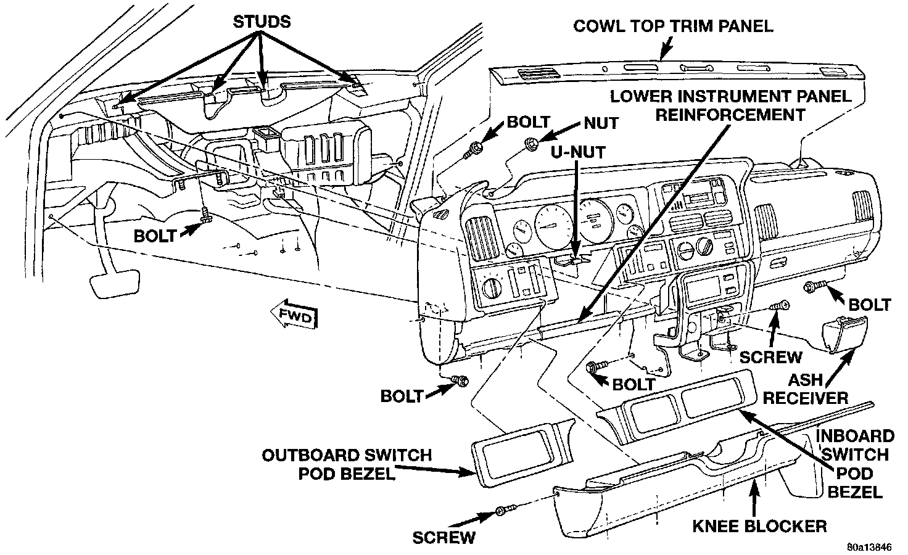

Instrument Panel Assembly Replacement
REMOVALWARNING: ON VEHICLES EQUIPPED WITH AIRBAGS, REFER TO AIR BAGS AND SEAT BELTS/AIR BAGS BEFORE ATTEMPTING ANY STEERING WHEEL, STEERING COLUMN, OR INSTRUMENT PANEL COMPONENT DIAGNOSIS OR SERVICE. FAILURE TO TAKE THE PROPER PRECAUTIONS COULD RESULT IN ACCIDENTAL AIRBAG DEPLOYMENT AND POSSIBLE PERSONAL INJURY.
1. Disconnect and isolate the battery negative cable.
2. Remove both switch pod bezels as described.
3. Remove the knee blocker as described.
Instrument Panel Assembly Remove/Install:

4. Remove the bolts that secure the lower instrument panel reinforcement to the instrument panel armature and remove the reinforcement.
5. Remove the upper and lower steering column shrouds.
6. Unplug all of the wire harness connectors on the steering column-mounted components and switches.
7. Remove the three nuts that secure the steering column toe plate at the base of the steering column.
8. Remove the two nuts that secure the steering column mounting bracket to the studs on the steering column and brake pedal support. Lower the steering column to the floor.
9. Remove both cowl side trim panels.
10. Unplug the instrument panel to body wire harness connector under the left end of the instrument panel.
11. Unplug the brake lamp switch wire harness connector.
12. Unplug the instrument panel to heater - A/C housing vacuum harness connector (manual temperature control only) and wire harness connector located under the passenger side end of the instrument panel.
13. Unplug the radio antenna coaxial cable connector near the right cowl side panel.
14. Unplug all of the instrument panel wire harness connectors from the junction block on the right cowl side panel.
15. If the vehicle is so equipped, disconnect the in-car temperature sensor aspirator hose at the coupling near the passenger side of the transmission floor tunnel.
16. On Left-Hand Drive (LHD) models only, remove the ash receiver and remove the screw in the back of the ash receiver housing that secures the instrument panel armature to the heater - A/C housing.
17. Pull back the floor carpet on the transmission floor tunnel from the base of the instrument panel center bezel and remove the two bolts that secure the instrument panel center bracket to the floor.
18. Remove the two bolts that secure the instrument panel center bracket to the driver side of the transmission floor tunnel.
19. Remove the bolt that secures the instrument panel armature to the steering column and brake pedal support.
20. Remove the two bolts that secure the ends of the instrument panel armature to the cowl side panels.
21. Remove the cowl top trim panel as described.
22. Remove the two bolts that secure the ends of the instrument panel armature to the windshield fence.
23. Remove the four nuts that secure the top of the instrument panel armature to the studs on the windshield fence.
24. With the aid of an assistant, lift the instrument panel off of the windshield fence studs and maneuver the assembly out of the vehicle through the passenger side front door.
25. Reverse the removal procedures to install. Tighten the mounting hardware as follows:
- Instrument panel center bracket to floor pan transmission tunnel fasteners - 28 N.m (250 in.lbs.)
- Instrument panel to windshield fence bolts and nuts - 12 N.m (105 in.lbs.)
- Instrument panel to cowl side panel bolts - 12 N.m (105 in.lbs.)
- Instrument panel to steering column support bolt - 12 N.m (105 in.lbs.)
- Knee blocker mounting screws - 2.2 N.m (20 in.lbs.).